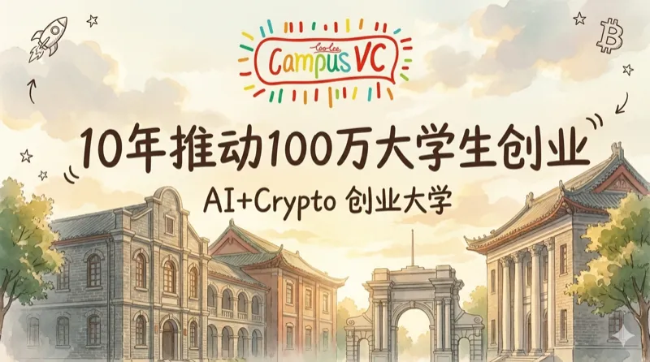
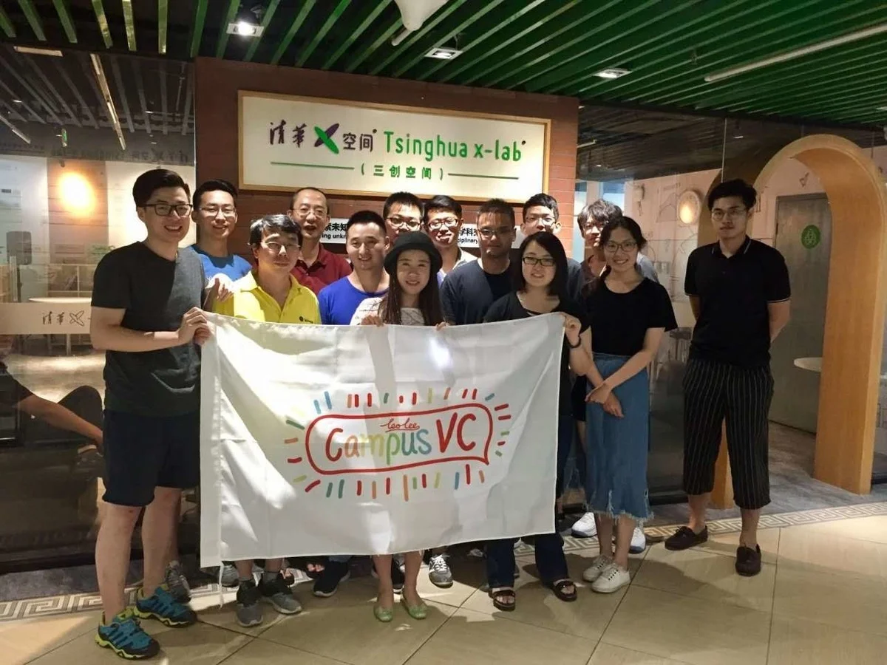
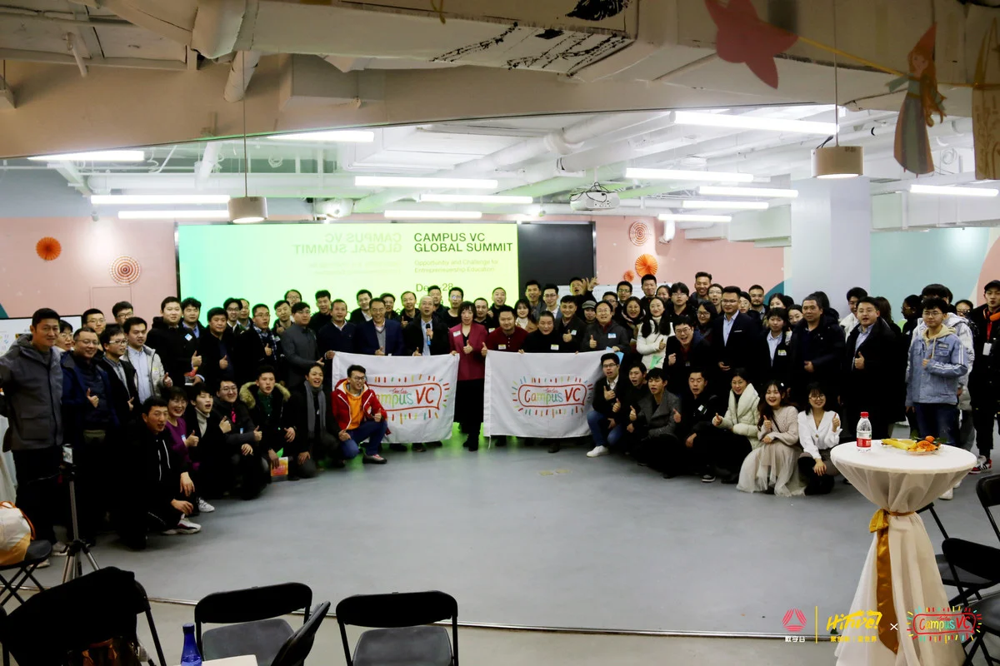
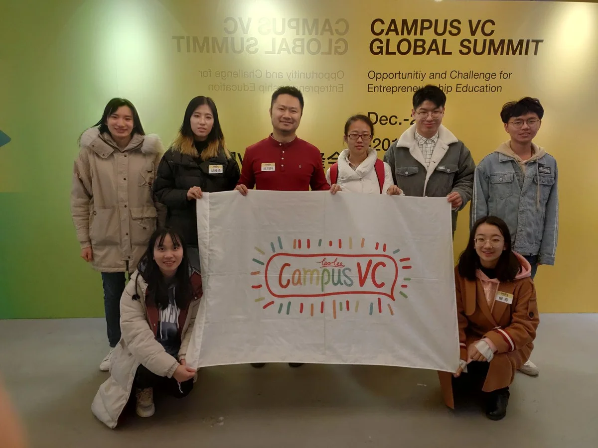
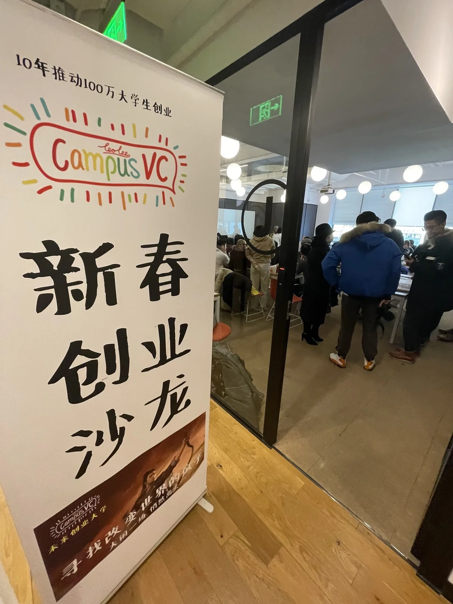

校园VC大学生数字创业教育的实战派
寻找改变世界的疯子
和高校老师、年轻创造者一起，从身边找一个真问题，用 AI 做出产品，拿给真实用户试。我们想教会学生的，是把想法变成产品，把产品变成生意。

校园VC清华火种节
连续 8 年大学生创业盛会 · 看视频感受清华创新课堂
创始人介绍
著名企业家、教育专家、助力于大学生创业教育
殷建松 Jason
校园VC创始合伙人
- 清华 x-lab 兼职顾问、清华 iCenter 创客导师、北大研究生院投资导师、国创赛评委
- 曾任微软 Windows 产品经理和 IDG 战略咨询公司 In-Stat 总经理
- 1997 年 MBA 毕业于荷兰马斯特里赫特管理学院
- 1993 年本科毕业于对外经济贸易大学国际金融专业
活动照片
火种节 · 数创班 · 全球峰会




常见问题与联系方式
先看 6 条最常问的，再选适合你的联系入口
常见问题
校园VC是什么？
校园VC是大学生数字创业教育的实战派，联动高校教师和年轻创造者，用 AI 发现需求、做出产品、接触真实用户。我们的使命是十年推动100万大学生创业。
校园VC提供哪些课程和服务？
高校教师可以用三小时火种节带学生体验创业，也可以开设六周数创班。学生可以阅读免费数创教程、参加大创社群，或从资源中心了解加密创投课程和播客。
校园VC的创始人是谁？
校园VC由殷建松（Jason）创立。他是清华大学 x-lab 兼职顾问、清华 iCenter 创客导师、北大研究生院投资导师，曾任微软 Windows 产品经理和 IDG 战略咨询公司 In-Stat 总经理。著有创业教材《从零到英雄》（北京出版社出版，李开复、俞敏洪对此书有推荐）。
如何加入校园VC的课程或社群？
先加入学习群，获得每日两份新闻日报，并且可以和助教老师交流更多校园VC给学生端或者老师端提供的服务。
校园VC的课程适合哪些人？
校园VC的课程主要面向全国高校创业学院和有创业意愿的大学生。无论你是对数字创业、AI 应用还是 Web3/Crypto 领域感兴趣，都能找到适合的课程和社群资源。
什么是加密创投 CSS？
CSS（Crypto Startup School）是校园VC旗下面向加密货币创业和投资人才的就创投服务平台。包含 CSS 播客（小宇宙上超万人订阅）和线上六周加密创投营。